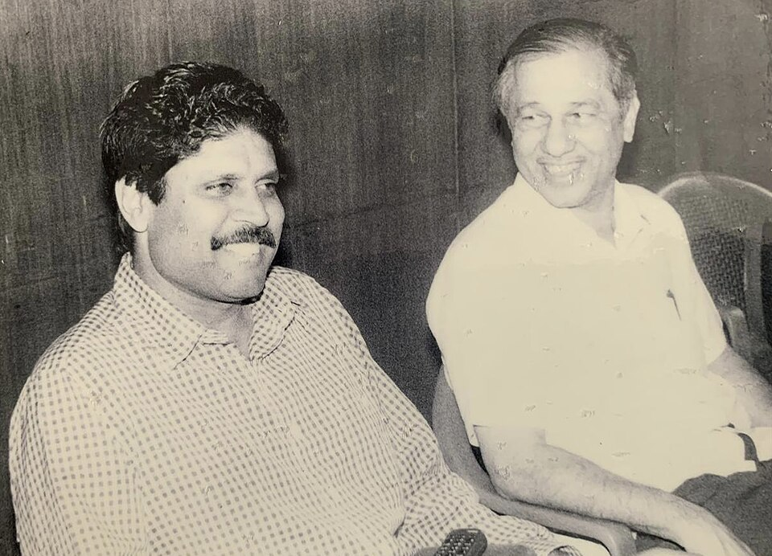

खेल
 खेल
खेलराइजिंग स्टार एशिया कप: पाकिस्तान ए ने भारत ए को 48 रनों से हराया
राइजिंग स्टार एशिया कप के मुकाबले में पाकिस्तान ए ने भारत ए को 48 रनों से हरा दिया। अभिषेक शर्मा और कप्तान तिलक वर्मा के शानदार प्रदर्शन के बावजूद भारतीय टीम लक्ष्य हासिल करने में नाकाम रही।
खेलएशिया कप राइजिंग स्टार्स: नेपाल और पाकिस्तान ए के खिलाफ फ्लॉप रहे रिंकू सिंह
कतर के दोहा में खेले जा रहे एशिया कप राइजिंग स्टार्स 2026 में इंडिया ए के उप-कप्तान रिंकू सिंह नेपाल और पाकिस्तान ए के खिलाफ शुरुआती दोनों मैचों में बड़ा स्कोर बनाने में नाकाम रहे।
खेलराइजिंग स्टार्स एशिया कप: पाकिस्तान ए के खिलाफ अभिषेक शर्मा की आक्रामक पारी
राइजिंग स्टार्स एशिया कप में पाकिस्तान ए के खिलाफ मुकाबले में अभिषेक शर्मा ने 42 गेंदों में 70 रनों की शानदार पारी खेली। टीम इंडिया ए को इस मैच में 314 रनों का लक्ष्य मिला था।
 खेल
खेलसैयद मुश्ताक अली ट्रॉफी: भुवनेश्वर और यश दयाल के दम पर झारखंड से जीता उत्तर प्रदेश
सैयद मुश्ताक अली ट्रॉफी 2026 के रोमांचक मुकाबले में उत्तर प्रदेश ने डिफेंडिंग चैंपियन झारखंड को 12 रनों से हराया। तेज गेंदबाज भुवनेश्वर कुमार और यश दयाल ने अंतिम ओवरों में शानदार गेंदबाजी कर दिलाई जीत।
खेलक्रिकेटर युजवेंद्र चहल ने बीजेपी ज्वाइन की, पूर्व क्रिकेटर अतुल वासन ने दी प्रतिक्रिया
भारतीय क्रिकेटर युजवेंद्र चहल ने शनिवार को आधिकारिक रूप से भारतीय जनता पार्टी ज्वाइन कर ली है। उन्हें ओबीसी मोर्चा की कार्यकारिणी में विशेष आमंत्रित सदस्य बनाया गया है।
खेलइंडिया ए के सामने पाकिस्तान ए का लक्ष्य, 313 रन पर सिमटी पारी
पाकिस्तान ए ने इंडिया ए के खिलाफ मैच में 313 रन बनाए हैं। टीम के लिए हसन नवाज ने सर्वाधिक 79 रन की पारी खेली, जबकि भारत की ओर से हर्षित राणा, विप्रज निगम और सूर्यांश शेडगे ने दो-दो विकेट झटके।
 खेल
खेलवेलिंगटन टेस्ट: मैच बचाने के लिए न्यूजीलैंड को पांचवें दिन खेलने होंगे 90 ओवर
वेलिंगटन टेस्ट में जीत के लिए उतरी भारतीय टीम के सामने पांचवें दिन न्यूजीलैंड के बल्लेबाजों को रोकने की चुनौती है। कीवी टीम अभी भी 233 रन पीछे है और उसे मैच बचाने के लिए 90 ओवर खेलने हैं।
खेलपूर्व क्रिकेटर सुरेश रैना ने कराया दिल्ली आवास का टूर, घर में सजी हैं खेल की यादें
पूर्व भारतीय क्रिकेटर सुरेश रैना ने अपने दिल्ली स्थित आवास का वीडियो टूर कराया है। वसंत कुंज स्थित इस घर में क्रिकेट करियर की यादें और एक आधुनिक रसोईघर के साथ टेरेस पर मिनी गार्डन भी है।
खेलरेलवे के तेज गेंदबाज जमशेद आलम ने टी20 पदार्पण में रचा इतिहास, चार गेंदों पर झटके चार विकेट
रेलवे के युवा तेज गेंदबाज जमशेद आलम ने सैयद मुश्ताक अली ट्रॉफी में सौराष्ट्र के खिलाफ अपने टी20 पदार्पण मैच में चार गेंदों पर चार विकेट लेकर इतिहास रच दिया है।
 खेल
खेलभारतीय मूल के निखिल चौधरी के शानदार प्रदर्शन से ऑस्ट्रेलिया ने इंग्लैंड को हराया
मेलबर्न में खेले गए पहले टी20 मैच में भारतीय मूल के निखिल चौधरी के ऑलराउंड प्रदर्शन के दम पर ऑस्ट्रेलिया ने इंग्लैंड को रोमांचक मात दी.
 खेल
खेलन्यूजीलैंड के खिलाफ टेस्ट में ऋषभ पंत ने शतकीय पारी के बाद दिया बड़ा बयान
न्यूजीलैंड के खिलाफ पहले टेस्ट में 128 रन बनाने वाले भारतीय बल्लेबाज ऋषभ पंत ने कहा कि अब उनका फोकस छक्कों के रिकॉर्ड के बजाय खेल में निरंतरता बनाए रखने पर है।
खेलराइजिंग स्टार्स एशिया कप: भारत ए और पाकिस्तान शाहीन्स के बीच आज मुकाबला
राइजिंग स्टार्स एशिया कप 2026 में रविवार को भारत ए और पाकिस्तान शाहीन्स के बीच मुकाबला खेला जाएगा। इस मैच में वैभव सूर्यवंशी और अली रजा की भिड़ंत पर खास नजरें रहेंगी।
 खेल
खेलजसप्रीत बुमराह ने वेलिंग्टन टेस्ट में रचा इतिहास, न्यूजीलैंड के कप्तान टॉम लैथम को दोनों पारियों में किया शून्य पर आउट
वेलिंग्टन टेस्ट में भारतीय तेज गेंदबाज जसप्रीत बुमराह ने न्यूजीलैंड के कप्तान टॉम लैथम को दोनों पारियों में शून्य पर आउट किया। ऐसा करने वाले वह तीसरे भारतीय गेंदबाज बन गए हैं।
खेलभारतीय क्रिकेट टीम ने न्यूजीलैंड में टेस्ट पारी का बनाया सबसे बड़ा स्कोर
वेलिंगटन टेस्ट में भारत ने पहली पारी 720/9 पर घोषित की। केएल राहुल और ऋषभ पंत ने जड़े शतक, विदेशी धरती पर यह भारत का सर्वोच्च टेस्ट स्कोर है।
खेलऋषभ पंत टेस्ट क्रिकेट में दूसरे सबसे ज्यादा छक्के लगाने वाले बल्लेबाज बने
न्यूजीलैंड के खिलाफ टेस्ट मैच में शानदार शतकीय पारी खेलते हुए ऋषभ पंत ने टेस्ट क्रिकेट में सबसे ज्यादा छक्के लगाने के मामले में ब्रेंडन मैककुलम को पीछे छोड़ दिया है।
खेलवेलिंगटन टेस्ट: भारत ने 720 रन पर घोषित की पारी, बनाई 352 रन की बढ़त
वेलिंगटन टेस्ट में भारत ने अपनी पहली पारी सात विकेट पर 720 रन बनाकर घोषित की। यह टेस्ट इतिहास में भारत का तीसरा सबसे बड़ा और न्यूजीलैंड की जमीन पर किसी भी टीम का सबसे बड़ा स्कोर है।
खेलन्यूजीलैंड के खिलाफ टेस्ट में ऋषभ पंत का शतक, SENA देशों में रचा इतिहास
वेलिंगटन टेस्ट में शतक लगाकर विकेटकीपर बल्लेबाज ऋषभ पंत SENA देशों में शतक जड़ने वाले छठे भारतीय बन गए हैं। भारत ने अपनी पहली पारी 720/9 पर घोषित की।
 खेल
खेलऋषभ पंत ने जड़ा शानदार शतक, न्यूज़ीलैंड के खिलाफ भारत की स्थिति मज़बूत
न्यूज़ीलैंड के खिलाफ मुकाबले में ऋषभ पंत ने शतकीय पारी खेलते हुए 153 गेंदों में 128 रन बनाए, जिससे भारत ने बड़ी बढ़त हासिल कर ली है।
 खेल
खेलकेएल राहुल ने वेलिंगटन टेस्ट में जड़ा शानदार शतक, SENA देशों में रचा इतिहास
भारत के सलामी बल्लेबाज़ केएल राहुल ने न्यूज़ीलैंड के खिलाफ वेलिंगटन टेस्ट में 136 रनों की पारी खेली। इसके साथ ही वे SENA देशों में टेस्ट शतक जड़ने वाले पहले भारतीय ओपनर बन गए हैं।
खेलएशिया कप राइजिंग स्टार्स: भारत ए और पाकिस्तान ए के बीच मुकाबला
दोहा में एशिया कप राइजिंग स्टार्स 2026 के तहत भारत ए और पाकिस्तान ए की टीमें आमने-सामने हैं। इस मुकाबले पर दोनों देशों के क्रिकेट प्रेमियों की नजर टिकी है।
खेलभारत-न्यूजीलैंड पहला टेस्ट: चौथे दिन कीवी टीम को शुरुआती झटका, बुमराह ने लाथम को शून्य पर आउट किया
भारत के खिलाफ पहले टेस्ट मैच की दूसरी पारी में न्यूजीलैंड की शुरुआत खराब रही और जसप्रीत बुमराह ने टॉम लाथम को शून्य पर आउट कर दिया। भारतीय टीम ने अपनी पहली पारी 600 रन से अधिक के विशाल स्कोर पर घोषित की है।
खेलऋषभ पंत ने वेलिंगटन में जड़ा शानदार शतक, बनाए कई बड़े रिकॉर्ड
न्यूजीलैंड के खिलाफ वेलिंगटन टेस्ट में शतक लगाकर ऋषभ पंत SENA देशों में शतक जड़ने वाले पहले भारतीय विकेटकीपर बन गए हैं। उन्होंने टेस्ट करियर का नौवां शतक पूरा किया है।
खेलभारत-न्यूजीलैंड पहला टेस्ट: चौथे दिन भारत का स्कोर 500 के पार, मजबूत स्थिति में टीम
वेलिंग्टन टेस्ट के चौथे दिन भारतीय टीम ने अपनी स्थिति मजबूत कर ली है। ऋषभ पंत और अंशुल कंबोज क्रीज पर डटे हुए हैं, और भारत की बढ़त 160 रन से अधिक हो गई है।
 खेल
खेलराइजिंग स्टार्स एशिया कप: कतर में आज आमने-सामने होगी इंडिया ए और पाकिस्तान शाहीन
राइजिंग स्टार्स एशिया कप 2026 में कतर के दोहा में 22 नवंबर को इंडिया ए और पाकिस्तान शाहीन के बीच मुकाबला होगा। दोनों टीमों ने अपने शुरुआती मैच जीते हैं।
खेलबीसीसीआई और पीसीबी के सेंट्रल कॉन्ट्रैक्ट में सैलरी का अंतर
पाकिस्तान क्रिकेट बोर्ड और बीसीसीआई की खिलाड़ी वेतन प्रणाली में बड़ा अंतर है। भारतीय क्रिकेट कंट्रोल बोर्ड अपने शीर्ष खिलाड़ियों को सालाना 5 करोड़ रुपये तक देता है, जबकि पीसीबी के अनुबंध अलग ढांचे पर आधारित हैं।
खेलब्लाइंड एशिया कप: पाकिस्तानी अंपायर के विवादित जश्न पर CABI ने उठाए सवाल
क्रिकेट एसोसिएशन फॉर द ब्लाइंड इन इंडिया (CABI) ने ढाका में हुए एशिया कप फाइनल के बाद पाकिस्तानी अंपायर के एक वीडियो पर आपत्ति जताई है। वीडियो में अंपायर पाकिस्तानी खिलाड़ियों के साथ जश्न मनाते दिख रहा है।

खेलमोहम्मद सिराज के चयन विवाद पर कपिल देव ने दिया संतुलित बयान
भारत और न्यूजीलैंड के पहले टेस्ट मैच में मोहम्मद सिराज को प्लेइंग इलेवन से बाहर रखे जाने पर कांग्रेस नेता इमरान मसूद ने भेदभाव का आरोप लगाया था। इस विवाद पर पूर्व कप्तान कपिल देव ने कहा है कि टीम चयन चयनकर्ताओं का काम है।
खेलऑस्ट्रेलिया ने पहले टी20 में इंग्लैंड को हराया, निखिल चौधरी का शानदार अर्धशतक
मेलबर्न में खेले गए पहले टी20 मैच में ऑस्ट्रेलिया ने इंग्लैंड को 3 विकेट से हरा दिया है। भारतीय मूल के खिलाड़ी निखिल चौधरी ने ऑस्ट्रेलिया की ओर से खेलते हुए शानदार अर्धशतक जड़ा।
 खेल
खेलगिल और पंत ने WTC में पूरे किए 3000 रन, रचा इतिहास
शुभमन गिल और ऋषभ पंत ने न्यूजीलैंड के खिलाफ वेलिंगटन टेस्ट में वर्ल्ड टेस्ट चैंपियनशिप के तहत 3000 रन पूरे कर लिए हैं। पंत यह उपलब्धि हासिल करने वाले दुनिया के पहले विकेटकीपर बन गए हैं।
खेलभारत और पाकिस्तान के बीच रविवार को होगी भिड़ंत, सेमीफाइनल पर होगी नजर
राइजिंग स्टार्स एशिया कप 2026 में रविवार को भारत और पाकिस्तान की टीमें आमने-सामने होंगी। दोहा में होने वाले इस मुकाबले को जीतने वाली टीम सेमीफाइनल में अपनी स्थिति लगभग मजबूत कर लेगी।
खेलइंग्लैंड के कप्तान हैरी ब्रूक ने ऑस्ट्रेलिया के खिलाफ जड़ा तूफानी अर्धशतक
मेलबर्न में खेले जा रहे पहले टी20 मुकाबले में इंग्लैंड के कप्तान हैरी ब्रूक ने मात्र 20 गेंदों में ताबड़तोड़ अर्धशतक लगाया। उन्होंने अपनी पारी में 65 रन बनाए।
खेलपाकिस्तान क्रिकेट बोर्ड ने जारी किया नया सेंट्रल कॉन्ट्रैक्ट, बाबर आजम टॉप कैटेगरी में शामिल
पाकिस्तान क्रिकेट बोर्ड ने 2026-27 के लिए नए सेंट्रल कॉन्ट्रैक्ट का ऐलान कर दिया है। बाबर आजम और सलमान अली आगा को टॉप कैटेगरी में जगह मिली है, जबकि मोहम्मद रिजवान और शान मसूद सूची से बाहर हो गए हैं।
खेलसूर्यकुमार यादव फिलहाल टी20 टीम की योजनाओं में शामिल नहीं: बीसीसीआई सूत्र
घरेलू क्रिकेट में शानदार प्रदर्शन के बावजूद सूर्यकुमार यादव को लेकर बीसीसीआई के एक सूत्र ने दावा किया है कि वह फिलहाल भारतीय टी20 टीम की योजनाओं का हिस्सा नहीं हैं।
खेलसैयद मुश्ताक अली ट्रॉफी में शानदार प्रदर्शन के बावजूद क्या सूर्यकुमार यादव की टीम इंडिया में वापसी मुश्किल?
सैयद मुश्ताक अली ट्रॉफी में शानदार प्रदर्शन कर रहे सूर्यकुमार यादव फिलहाल बीसीसीआई के भविष्य की योजनाओं में शामिल नहीं हैं। रिपोर्ट के अनुसार, चयनकर्ता युवाओं को मौका देने पर विचार कर रहे हैं।
खेलएशिया कप राइजिंग स्टार्स: भारत और पाकिस्तान के बीच मुकाबला कल, जानिए किसका पलड़ा भारी
एशिया कप राइजिंग स्टार्स 2026 में भारत और पाकिस्तान का मुकाबला रविवार को दोहा में खेला जाएगा। शुरुआती मैचों के प्रदर्शन के आधार पर इंडिया-ए टीम मजबूत नजर आ रही है।
खेलवेलिंगटन टेस्ट: केएल राहुल के शतक और रिकॉर्ड्स के दम पर मजबूत स्थिति में भारत
भारत और न्यूजीलैंड के बीच वेलिंगटन टेस्ट के तीसरे दिन केएल राहुल ने शतक लगाया और कई रिकॉर्ड अपने नाम किए। स्टंप्स तक भारत ने चार विकेट पर 486 रन बनाकर 118 रन की बढ़त हासिल कर ली है।
खेलवेलिंगटन टेस्ट: शतक से चूके शुभमन गिल, भारत ने बनाई मजबूत बढ़त
वेलिंगटन टेस्ट में कप्तान शुभमन गिल 98 रन बनाकर आउट हुए। तीसरे दिन का खेल समाप्त होने तक भारत ने पहली पारी में चार विकेट पर 486 रन बनाकर 118 रनों की बढ़त हासिल कर ली है।
खेलभारत ने न्यूजीलैंड के खिलाफ तीसरे दिन बनाए 486 रन, गिल शतक से चूके
भारत ने न्यूजीलैंड के खिलाफ टेस्ट मैच के तीसरे दिन 4 विकेट पर 486 रन बनाकर 118 रनों की बढ़त हासिल कर ली है। शुभमन गिल 98 रन बनाकर आउट हुए, जबकि केएल राहुल ने ऐतिहासिक शतक लगाया।
खेलभारत-न्यूजीलैंड पहला टेस्ट: केएल राहुल का शतक, तीसरे दिन भारत की मजबूत बढ़त
वेलिंगटन टेस्ट के तीसरे दिन केएल राहुल के शानदार शतक और अर्धशतकों की मदद से भारत ने न्यूजीलैंड पर 118 रन की बढ़त हासिल कर ली है।
 खेल
खेलऑस्ट्रेलियाई तेज गेंदबाज जोश हेजलवुड का पैट कमिंस को समर्थन, टेस्ट कप्तानी हटाने पर दी प्रतिक्रिया
जोश हेजलवुड ने टेस्ट कप्तान पैट कमिंस का समर्थन करते हुए कहा है कि अगर कमिंस को कप्तानी से हटाया जाता है, तो वह अपने टेस्ट करियर के भविष्य पर विचार करेंगे। साथ ही उन्होंने 2018 के सैंडपेपर विवाद में अपनी भूमिका से इनकार किया है।